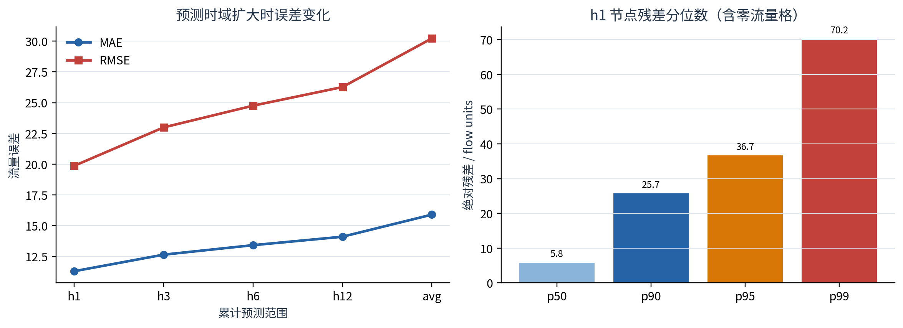
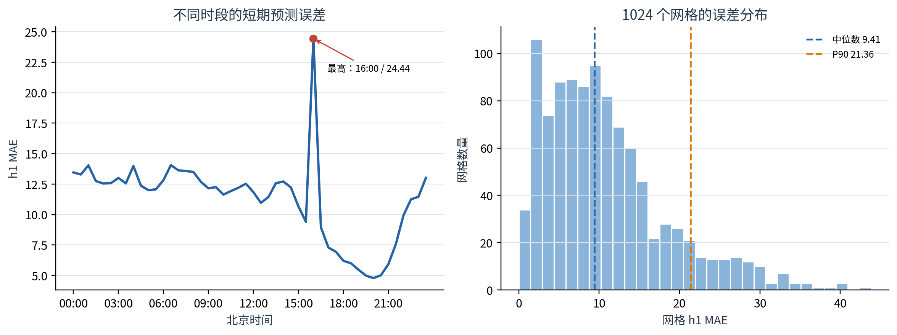
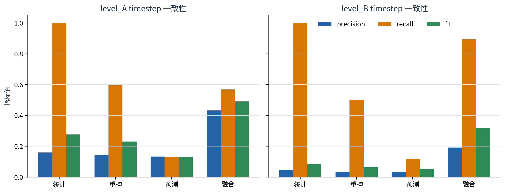
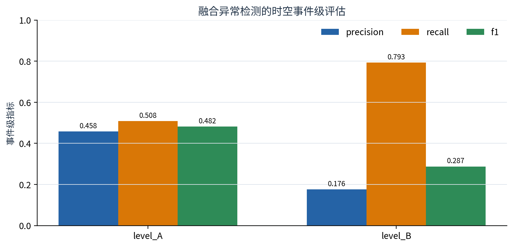

结论摘要： 最终模型在 4,022 个严格 gap-aware 测试窗口上取得 h1 MAE 11.3019、24 小时平均 MAE 15.9030。四 seed 均值集成相对最佳单模型的 24 小时平均 MAE 再降低 1.30%。异常融合在 Level-A 弱标签上 timestep F1 为 0.4912、事件 F1 为 0.4819；这些异常指标只表示弱规则一致性，不是真实业务准确率。
d_model=32、4 个注意力头、2 层，输入含流量、时间上下文及 33 维无泄漏静态节点特征，并使用 linear residual head；eps=1.0；| scope | forecast_hours | MAE | RMSE | MAPE | test_windows |
|---|---|---|---|---|---|
| h1 | 0.5000 | 11.3019 | 19.8621 | 23.4913 | 4022 |
| h3 | 1.5000 | 12.6473 | 22.9856 | 26.1838 | 4022 |
| h6 | 3.0000 | 13.4194 | 24.7530 | 28.2789 | 4022 |
| h12 | 6.0000 | 14.1068 | 26.2676 | 30.6591 | 4022 |
| avg | 24.0000 | 15.9030 | 30.2250 | 35.4350 | 4022 |
h3/h6/h12 是前 3/6/12 步累计指标，而不是单独第 3/6/12 步；avg 汇总全部 48 个预测步。

四个单模型的 24 小时平均结果如下。最佳单模型 seed42 的 MAE 为 16.1132，ensemble 为 15.9030，说明多 seed 平均主要降低了随机初始化带来的方差。
| seed | MAE | RMSE | MAPE |
|---|---|---|---|
| 42 | 16.1132 | 30.3198 | 36.9075 |
| 7 | 16.9079 | 31.9627 | 39.7537 |
| 21 | 16.4172 | 31.2766 | 36.5076 |
| 123 | 16.5463 | 31.1309 | 38.1018 |

网格 MAE 中位数为 9.4145，P90 为 21.3621。最困难网格为 grid 157，MAE 43.8480。时段上 16:00 的误差最高，明显高于相邻时段，提示后续应针对突变日或特殊日期检查该时段的样本构成。
误差最高的时段：
| local_time | MAE | RMSE | MAPE |
|---|---|---|---|
| 16:00 | 24.4416 | 53.8438 | 66.5362 |
| 06:30 | 14.0519 | 25.2563 | 21.2142 |
| 01:00 | 14.0341 | 24.4249 | 17.7950 |
| 04:00 | 13.9813 | 25.8399 | 19.2839 |
| 07:00 | 13.6271 | 23.5358 | 40.6575 |
误差最高的网格：
| grid_id | MAE | RMSE | MAPE | valid_count |
|---|---|---|---|---|
| 157 | 43.8480 | 67.1035 | 23.9579 | 4022 |
| 219 | 40.2592 | 61.4400 | 15.5342 | 4021 |
| 375 | 40.1303 | 64.8538 | 21.5161 | 4022 |
| 126 | 39.9037 | 58.2741 | 19.6989 | 4021 |
| 188 | 39.2566 | 60.7336 | 17.7643 | 4021 |
| 600 | 37.0505 | 58.7574 | 16.1855 | 4022 |
| 597 | 35.4630 | 53.9794 | 18.2355 | 4022 |
| 588 | 35.3833 | 53.1877 | 18.3462 | 4021 |
| 250 | 35.2037 | 52.5031 | 13.7888 | 4020 |
| 281 | 35.0104 | 51.5775 | 21.2021 | 4022 |

最终融合结果：
| label_reference | accuracy | balanced_accuracy | precision | recall | f1 | roc_auc | average_precision |
|---|---|---|---|---|---|---|---|
| level_A | 0.9212 | 0.7576 | 0.4322 | 0.5688 | 0.4912 | 0.9335 | 0.4608 |
| level_B | 0.9269 | 0.9111 | 0.1921 | 0.8947 | 0.3163 | 0.9689 | 0.4436 |
Level-A 的 F1 更高，Level-B 的 recall 和 balanced accuracy 更高但 precision 较低。融合结果优于任一单类检测器的 F1，说明三类证据具有互补性；但统计检测同时参与弱标签构造和最终融合（权重 0.70），因此这些数值存在规则相关性。

| label_reference | event_precision | event_recall | event_f1 | true_event_count | pred_event_count | mean_detection_delay_hours |
|---|---|---|---|---|---|---|
| level_A | 0.4580 | 0.5085 | 0.4819 | 118 | 131 | 0.1833 |
| level_B | 0.1756 | 0.7931 | 0.2875 | 29 | 131 | 0.0217 |
最终双向融合产生 131 个事件。Level-A 参考下事件 F1 为 0.4819；Level-B 参考更严格、事件数更少，recall 达 0.7931，但 precision 下降。匹配采用一对一最大基数匹配，并在非连续 30 分钟时间缺口处强制断开事件。
outputs/week7_evaluation/final_system_v1/，配置为 configs/week7_evaluation.yaml；summary.json。